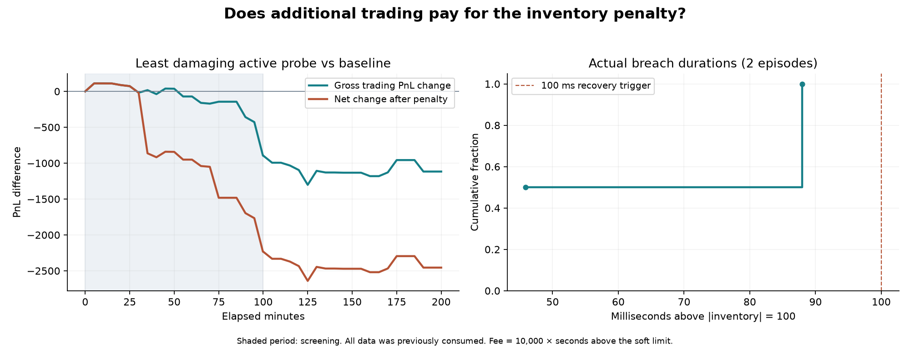

Extra capacity is cheap only if the inventory breach is extremely brief.
Keep the 100-lot, penalty-free model. No tested policy earned a reliable net improvement from paying the fee.
What the simulator actually charges
penalty = 10,000 × total seconds with |actual inventory| > 100 net score = cash + executable liquidation value − penalty hard potential-position limit = 1,000
The threshold is strict: exactly ±100 has no fee. Pending order capacity by itself does not incur this fee. Breach size does not change the rate: 101 and 1,000 both cost 50 over 5 ms, 200 over 20 ms, or 1,000 over 100 ms. Natural offsetting fills can end a breach sooner than an actively submitted exit order. No simulator limit, fee, matching rule or scoring logic was changed.
The rule is unfavorable to small overshoots. For a five-millisecond episode, the extra one lot at a 101 cap would need 50 ticks of incremental profit just to cover the fee. An extra 400 lots would need 0.125 ticks per extra lot, but achieving those fills and exiting them still carries execution cost. The hard limit does not guarantee that the available capacity can actually be filled or unwound profitably.
Experiments and actual recovery
The first frozen cohort included continuous caps of 101, 250 and 1,000, plus six signal-gated burst policies and two controls. Initial gates required aligned inventory of at least 80 and a forecast edge of 0.5 or 1.0 ticks. They posted a few larger orders but never realized a breach. Five separately preregistered activation probes therefore lowered the admission threshold, allowed aligned inventory from zero, and included a 100 ms hold matching the forecast horizon. All fourteen candidates were included in the final selection check; the adaptive extension is preserved in the history.
On breach, guarded policies cancel risk-increasing orders. At the hold trigger they cancel normal quotes and submit IOC reductions toward the soft limit, allowing two ticks through the last visible market touch. All pending sends, cancellation requests, opposite quotes and partial IOC residuals remain reserved. A one-second cooldown follows recovery. Callback gaps, 5 ms order latency and insufficient liquidity can prolong a breach. The independent audit tracks exact charged time and every outstanding reservation, including orders currently being activated.
A synthetic integration test created a 300-lot position, recovered to 100 in 5 ms, and verified the real 50-unit fee. Separate tests establish the exact soft boundary, amount-independent charge, unchanged hard limit, partial-exit handling and cancellation reservations. All 69 repository tests pass.
First 100-minute replay: gross profit versus fee
| Policy | Cap | Gross PnL | Penalty | Net PnL | Seconds over 100 | Actual peak |
|---|---|---|---|---|---|---|
| continuous_101 | 101 | 276,019.00 | 28,391,938.72 | -28,115,919.72 | 2839.1939 | 101 |
| baseline | 100 | 274,386.00 | 0.00 | 274,386.00 | 0.0000 | 100 |
| continuous_250 | 250 | 355,754.00 | 42,062,360.36 | -41,706,606.36 | 4206.2360 | 250 |
| burst_125_hold0_edge0p5 | 125 | 274,386.00 | 0.00 | 274,386.00 | 0.0000 | 100 |
| burst_250_hold0_edge0p5 | 250 | 274,386.00 | 0.00 | 274,386.00 | 0.0000 | 100 |
| burst_500_hold0_edge0p5 | 500 | 274,386.00 | 0.00 | 274,386.00 | 0.0000 | 100 |
| guard_disabled | 100 | 274,386.00 | 0.00 | 274,386.00 | 0.0000 | 100 |
| continuous_1000 | 1000 | 103,244.00 | 49,862,517.42 | -49,759,273.42 | 4986.2517 | 1000 |
| burst_1000_hold0_edge0p5 | 1000 | 274,386.00 | 0.00 | 274,386.00 | 0.0000 | 100 |
| burst_500_hold20_edge0p5 | 500 | 274,386.00 | 0.00 | 274,386.00 | 0.0000 | 100 |
| burst_1000_hold20_edge1p0 | 1000 | 274,386.00 | 0.00 | 274,386.00 | 0.0000 | 100 |
| active_1000_hold100_edge0p3 | 1000 | 273,491.00 | 1,338.23 | 272,152.77 | 0.1338 | 160 |
| active_500_hold20_edge0p0 | 500 | 202,143.00 | 159,938.23 | 42,204.77 | 15.9938 | 500 |
| active_500_hold0_edge0p0 | 500 | 204,583.00 | 36,335.36 | 168,247.64 | 3.6335 | 500 |
| active_1000_hold20_edge0p0 | 1000 | 181,750.00 | 163,412.71 | 18,337.29 | 16.3413 | 1000 |
| active_1000_hold0_edge0p0 | 1000 | 185,619.00 | 41,496.57 | 144,122.43 | 4.1497 | 1000 |
The 101 cap earned only 1,633.00 extra gross PnL but paid 28,391,938.72 in penalties. The 250 cap added 81,368.00 gross, versus 42,062,360.36 of fees. Its break-even fee rate would have been about 19.34 per second, compared with the actual 10,000. The 1,000 cap also lost gross trading profit before fees.
The initial guarded policies' unchanged scores are controls with no realized breach, not evidence that paying the penalty works. The activation probes made actual fee-paying trades and all lost net PnL in screening. Screening used exact five-minute boundary marks through 5,990 seconds, avoiding artificial prefix-end order draining. Promotion required a 1% gain, gains in both halves, 12/20 positive blocks and a positive joint-bootstrap lower bound across all fourteen trials; none qualified.
Frozen diagnostic on the full tape and stress cases
The least damaging active candidate was active_1000_hold100_edge0p3. It was frozen for further diagnostic replay and cannot be promoted after failing the screen. The penalty-free controls were reused only after checking source/data/engine hashes and exact prefix-result/curve parity.
| Case | Baseline net | Candidate gross | Penalty | Candidate net | Net difference |
|---|---|---|---|---|---|
| round1_5ms | 554,347.00 | 553,230.00 | 1,338.23 | 551,891.77 | -2,455.23 |
| sample_v2 | 272,830.00 | 272,830.00 | 0.00 | 272,830.00 | +0.00 |
| round1_20ms | 462,925.00 | 460,807.00 | 3,739.26 | 457,067.74 | -5,857.26 |
| round1_50ms | 326,485.00 | 326,032.00 | 4,195.89 | 321,836.11 | -4,648.89 |
Full-round active exposure: 0.133823 seconds across 2 episodes; actual peak 160 lots. Median / 95th percentile / longest episode: 66.911 / 85.869 / 87.975 ms. No hard-limit order rejection occurred.
| Period | Baseline net | Candidate net | Difference |
|---|---|---|---|
| First 50 minutes | 130,119.00 | 129,276.25 | -842.75 |
| Next 49m 50s | 143,116.00 | 141,725.52 | -1,390.48 |
| Later period to 150m | 144,590.00 | 144,352.00 | -238.00 |
| Final 50 minutes | 136,522.00 | 136,538.00 | +16.00 |

Artifacts and verification
Recommended penalty-free submission · Unpromoted penalty experiment · Complete machine-readable evidence.
The exact experimental export was also replayed through the unmodified engine. Every result field and the complete PnL curve matched the audited replay exactly. Exact export CPU time: 241.5 seconds; peak working set 43.3 MiB. Sixteen screening replays, four confirmation replays and one official export replay were completed.
Experimental source SHA-256: b775bd14d6ce7a82e0ca8d2b0ab74cadceb8185833fc88955da11a68375f0bec Engine SHA-256: 742f49cbabb0e35a3dc0f64ab2ae731f0c0e8e521ce1404b301293efc0b6fcde